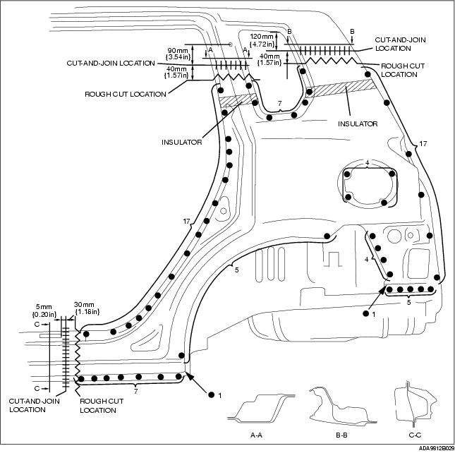

-
Caution
-
• Avoid cutting with a blowtorch or similar tools as the insulator (shaded area) is flammable.
1. The rear fender panel and the rear pillar inner are joined with glue at the wheel arch line. Use a chisel or simiar to separate the rear fender panel from the rear pillar inner, then remove the rear fender panel.
